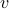
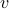
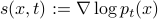

Session 7: Diffusion part 3, Score-based generative models

become less of a fool the next time at a cocktail party when someone asks you about AI-generated art
Now change pictures;
 represents a data point in some abstract data space now, either pixels of an image, or some representation of a protein structure.
represents a data point in some abstract data space now, either pixels of an image, or some representation of a protein structure.Review: a diffusive process can be described two ways, either as a stochastic trajectory of – or as a diff eq of the probability density, deterministically evolving over time (which also has the corresponding force / diffusion terms).
Discuss the straightforward way to simulate this with Euler integration, step by step.
If particle starts at
 at time
at time  and undergoes dynamics with constant drift  and constant diffusion coefficient, then .
and undergoes dynamics with constant drift  and constant diffusion coefficient, then .If instead force term is (pull towards origin) then (work this out…at long times it is a zero-centered Gaussian)
Finally introduce the generalization of this: “variance-preserving” process from Song 2021, with time-dependent schedule at which noise is injected, . Note how the stationary distribution is indepdendent of
…
What if at
, the particle were not localized at a single point , but had another arbitrary distribution? Write the convolution expression for and interpret this. And note that for large  , this is approximately the stationary dist.
, this is approximately the stationary dist.Claim the remarkable fact that diffusion equations can have a time-reversed partner with the same (Backward) Kolmogorov equation!
Here is where my understanding gets hazy.
Discuss what the score means, , and why knowing it is useful
Write down the objective function (score matching, appropriately weighted across
and )And what the sampling process looks like (Euler integration of the reverse, denoising process, from the prior distribution.)